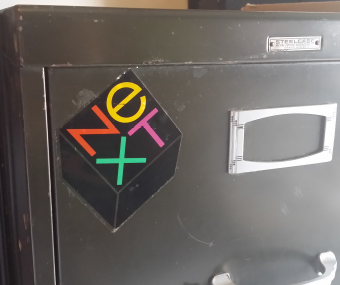

that I stuck to my file cabinet.  A true story: about 25 years ago as I was walking across the Quad at Northeastern University, some guy over by Dodge Hall was selling computers. He was set up outside at a tall table with his computer on display and had music blasting to attract attention. So I stopped by and talked with him for a few minutes. It was an impressive computer, all sleek looking and bigger than the Macintosh of the time. But it was way out of my price range - like six times the price of my car! Considering the over-abundance of credit card applications floating around campus, it's possible that some students got buried in debt that day. I had to go to class and so he gave me a sticker and I said goodbye. I stuck that sticker to my file cabinet, and remarkably, I still have it. I can't say for sure, but that man may have been Steve Jobs, or maybe not, just saying. And that is the day I met the man who gave me a NeXT computer sticker.
NeXT Computer Highlights:
- introduced in October of 1988
- high-end workstation designed for
- colleges
- students
- up to 16MB on-board RAM memory
- giant 17-inch monochrome monitor
- world's first object-oriented OS
- MSRP $6500.00
- December 1997, Apple buys NeXT
So what can I do to pay homage to a man who changed the world? Well, as a programming student, I guess my daily git commits and fcc challenges are a good start. And this assignment too.
But I'm looking for something that would really impress him, something Appley, something genius, something that I understand innately. And that is coming... all in due time...
About Me <-- I'm clickable!
Hi! I'm Edward Dupre, a student software developer. My current skills include (but not limited to): HTML, CSS, JavaScript, Java, Python, SQL and Mongo, Express, Angular and NodeJS (the MEAN Stack), and more.